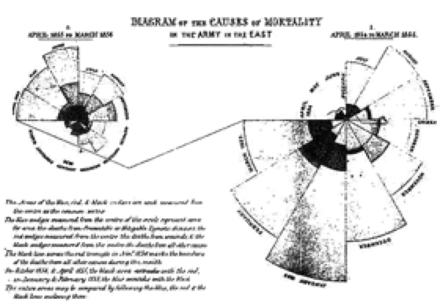
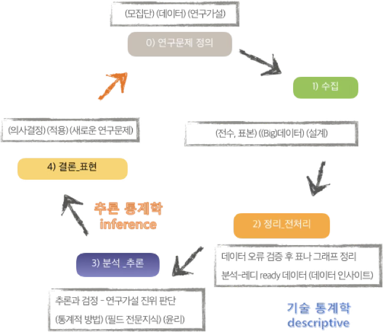
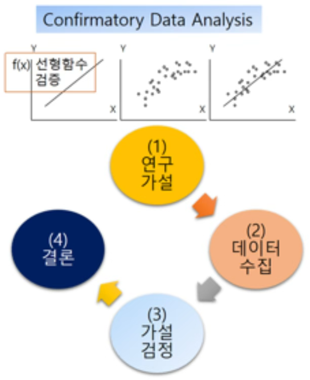
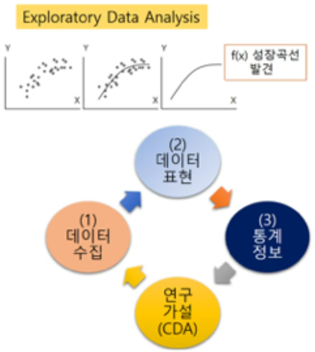
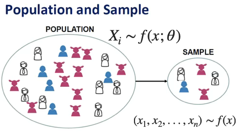

기초통계 1. 통계학 개념
chapter 1. 통계학이란?
통계학은 단순히 수를 더하거나, 그래프를 그리고, 타율·완료율·실업률과 같은 비율을 계산하는 것만을 의미하지 않는다. 통계학은 사회와 자연의 수치적 현상을 기술하고, 불완전하고 변동성이 있는 정보를 바탕으로 모집단과 과정에 대한 결론을 도출하는 과학적 원리와 기법의 집합이다. 즉, 통계학은 데이터로부터 배우는 과학이다.
현대 사회에서 거의 모든 사람, 기업 경영자, 마케팅 담당자, 사회과학자, 공학자, 의학 연구자, 소비자 등 데이터를 다룬다. 데이터는 분기별 매출액, 청소년 범죄 증가율, 수질 샘플의 오염도, 환자의 치료 생존율, 인구조사 결과, 혹은 자동차 구매 결정에 필요한 정보 등 다양한 형태로 존재한다.
1. 개념
(1) 정의
통계학은 수학의 한 분야로, 숫자 데이터를 수집하고 정리하며, 이를 분석하고 표현하는 일련의 과정에 관한 학문이다.
Kendall과 Stuart에 따르면, 통계학은 관심의 대상이 되는 집단(모집단)의 성질을 세거나 측정하여 얻어진 데이터를 다루는 과학의 한 분야이며, 여기서 이러한 성질을 확률변수라 한다.
Ott는 통계학을 단순히 ’데이터에 관한 학문’이라고 정의하였고, 어떤 익명의 정의에서는 통계학을 ’미지에 대한 가이드’라고 표현하였다.
Fisher (1935)는 통계학은 불확실한 상황에서 의사결정을 내리기 위해 데이터를 수집, 요약, 해석하는 과학이다.
Tukey (1962)는 통계학은 데이터를 더 잘 이해하고 설명하기 위한 학문이며, 단순한 데이터 요약을 넘어 새로운 통찰을 제공하는 방법론이다.
American Statistical Association (ASA)에서는 통계학은 데이터로부터 지식을 추출하고, 그 과정에서 불확실성을 정량화하며, 이를 바탕으로 의사결정을 지원하는 과학이자 예술이다.
Dodge & Romig (1959)은 통계학은 현상의 변동성을 이해하고 이를 바탕으로 합리적인 결정을 내리는 데 필요한 기술과 방법을 다루는 학문이다.
Croxton & Cowden (1939)은 통계학은 사실을 수집, 분류, 요약, 해석하여 합리적인 결론을 도출하고 예측을 가능하게 하는 과학이다.
마지막으로, 필자는 통계학을 ’Statistics is Art’라고 표현하며, 이를 단순한 수치 해석을 넘어 창의적 해석과 통찰의 영역으로 확장한다.
(2) 왜 통계학이 필요한가?
통계학이 필요한 이유는 다양하다. 첫째, 발표된 수치 자료를 평가할 수 있는 능력을 갖추기 위해서이다. 우리는 제조업체의 제품 주장, 사회·소비자·정치 여론조사 결과, 과학 연구 논문의 수치 결과 등에 일상적으로 노출된다. 이러한 결과 중 다수는 표본조사에 기초한 추론이며, 일부는 타당하지만 일부는 그렇지 않다. 표본 규모가 충분한 경우도 있으나 부족한 경우도 있다. 그럼에도 불구하고 이들 수치는 그럴듯하게 보인다. 일부 사람(특히 통계학자)은 통계를 이용하면 거의 모든 주장을 뒷받침할 수 있다고 말하고, 다른 사람은 통계가 진실을 왜곡하기 쉽다고 말한다. 두 주장 모두 사실이다. 표본조사 결과를 제시할 때는 고의이든 아니든 비전문가에게 잘못된 인상을 줄 위험이 존재한다.
둘째, 직업이나 업무 수행 과정에서 표본조사(설문조사 또는 실험) 결과를 해석하거나, 통계적 분석 방법을 활용하여 결론을 도출해야 할 필요가 있다. 예를 들어, 의사는 신약의 효능을 알리는 광고를 자주 접한다. 광고에는 신약과 기존 약물의 효과를 비교한 수치가 제시되지만, 그 차이가 실제 약효의 차이인지, 아니면 단순히 실험 측정의 무작위 변동 때문인지 판단해야 한다.
최근 법정 재판에서도 증거의 신뢰성을 평가하기 위해 확률과 통계적 추론의 활용이 증가하고 있다. 사회과학, 자연과학, 물리과학에서 통계는 필수적이다. 이들 학문은 자연현상 관찰, 표본조사, 실험을 통해 새로운 이론을 개발·검증하며, 통계 방법은 매출·이익 예측, 품질 관리, 회계 감사 등 다양한 분야에서 활용된다.
결론적으로 통계학은 과학, 산업, 경영 전반에서 중요한 역할을 수행한다. 이러한 분야에서 일하는 사람은 통계의 기본 개념, 강점, 한계를 반드시 이해해야 한다.
(3) 통계학자는 무엇을 하는가?
데이터로부터 배우는 과정에서 통계학자는 연구 또는 실험 설계, 분석을 위한 데이터 준비(그래프·수치 요약 포함), 데이터 분석, 분석 결과 보고의 모든 단계에 관여한다. 데이터 수집 방법에는 좋은 방법과 나쁜 방법이 있으며, 통계학자는 기존 조사기법과 과학적 연구 설계 지식을 활용하거나 새로운 기법을 개발하여 올바른 데이터 수집 방법을 제시한다.
데이터가 수집되면 의미 있는 해석을 위해 요약이 필요하다. 통계학자는 그래프·표·수치 요약을 통해 데이터를 정리하는 방법을 추천·적용하며, 평균값(대표값)과 범위·산포도 측정치는 데이터 해석의 중요한 기초가 된다.
통계학의 목적은 표본에서 얻은 정보를 바탕으로 모집단에 대한 추론을 하는 것이다. 예를 들어, 시장조사에서 일부 소비자의 반응을 조사하여 신제품에 대한 전체 잠재 소비자의 반응을 추정한다. 표본조사가 계획·실행이 잘 되면, 표본에서의 반응은 모집단의 반응과 대체로 일치한다고 볼 수 있다. 확률 개념은 이러한 추론을 가능하게 하며, 최적 추정치와 추정치의 오차 범위를 함께 제시할 수 있게 한다.
예를 들어, 감사인이 25,000개 계정 중 무작위로 2,000개를 조사하여 84개(4.2%)에서 오류를 발견했다고 하자. 이를 바탕으로 전체 25,000개 계정의 오류율을 추정할 수 있다. 추정치가 4.2%이고, 오차 범위가 ±0.9%라면, 실제 오류율은 이 범위 내에 있을 가능성이 높다. 이 ±값을 추론의 추정 오차(probable error)라 한다. 확률 개념은 이 추정 오차를 계산하게 해준다.
데이터 분석 단계에서 통계학자는 기존 기법을 적용하거나, 수학·확률이 결합된 새로운 분석 방법을 개발할 수 있다. 결과 보고 단계에서 통계학자는 분석 결과를 청중이 이해할 수 있도록 시각 자료·표·수치와 함께 전달한다. 비공식 대화에서는 데이터의 의미가 왜곡되거나 누락되기 쉽기 때문에, 공식 보고서는 비전문가도 혼동 없이 해석할 수 있는 방식으로 작성해야 한다.
통계학자의 역할은 모든 연구나 실험에 해당하지만, 학위 소지 통계학자는 드물다. 많은 조직은 전문 통계학자가 없거나 소수만 고용한다. 따라서 연구 설계, 데이터 요약 및 분석, 결과 보고는 비전문가가 수행하는 경우가 많다. 전문 통계학자가 참여하더라도 연구팀 전원이 통계 설계와 분석의 기본 개념을 이해해야 하며, 각자의 전문성을 바탕으로 연구 설계와 결과 전달 방안을 함께 결정해야 한다.
(4) 통계학과 빅데이터
통계학은 관심 있는 분야에서 존재하는 불확실성을 설명하기 위해, 목적에 맞는 데이터를 계획적으로 수집하고 이를 분석하여 가치 있는 정보를 추출하는 과학이다.
반면, 빅데이터는 실시간으로 발생하는 대용량·고속·복잡 데이터를 수집하고 분석하는 기술적·방법론적 접근을 의미한다. 빅데이터는 사전에 이론이나 명확한 목적을 설정하지 않고 수집된 경우가 많으며, 따라서 분석 과정에서 사후적으로 가치와 의미를 추출하는 특성을 가진다.
빅데이터 연구문제는 어떻게 처리하나?
빅데이터 연구문제는 그 특성상 다양한 분야 전문가의 협업을 필요로 한다. 연구문제와 직접 관련된 분야의 전문가는 물론, 데이터 수집·처리 기술을 담당하는 컴퓨터 프로그래머, 대규모 데이터 분석 기법을 다루는 머신러닝 전문가, 그리고 분석의 과학적 타당성을 확보하는 통계 전문가가 반드시 필요하다.
통계 전문가는 빅데이터로부터 가치 있는 정보를 추출하는 데 필수적인 역할을 한다. 빅데이터 분석에서 다음과 같은 이슈들은 특히 중요하며, 데이터 규모가 클수록 그 심각성이 커진다.
데이터 품질과 결측치 문제
데이터 관측 특성 및 매개효과 등 인과 추론에서의 혼동 요인
예측과 모형의 불확실성 정량화 문제
과학적 통계학은 이러한 문제를 다루기 위해 정교한 기술과 모델을 제공한다. 통계학자는 과학적 질문을 통계적 질문으로 변환하는 데 핵심적인 역할을 하며, 여기에는 데이터 구조 파악, 데이터를 생성한 기본 모델의 구축, 그리고 모수 추정이나 예측 과정이 포함된다.
빅데이터 시대 통계는 기회이다.
빅데이터 시대는 통계학에 새로운 기회를 제공한다. 빅데이터는 그 규모와 복잡성으로 인해, 저차원적이고 단순한 분석 상황에서 주로 사용되던 기존의 통계기법이나 단순 블랙박스 기반 계산만으로는 충분히 처리하기 어렵다. 따라서 데이터의 특성과 연구 목적에 부합하는 맞춤형 통계적 접근이 필수적이다.
통계학자는 데이터에서 편향을 발견하고 이를 수정하는 데 능숙하며, 불확실성을 정량적으로 측정하고 해석할 수 있는 능력을 갖추고 있다. 또한, 실험 설계와 표본 설계를 통해 신뢰성 있는 자료를 수집하고, 데이터 품질을 평가하며, 연구의 한계와 잠재적 오류를 명확히 드러내는 데 중요한 역할을 수행한다.
나아가, 결측 데이터나 비표본오차를 처리하고, 복잡한 데이터 구조를 설명하기 위한 적절한 모형을 개발하며, 인과 추론과 비교 효과 분석을 위한 통계적 방법을 설계한다. 이와 더불어, 중복되거나 정보 가치가 낮은 변수를 제거하고, 다양한 출처로부터의 정보를 통합하며, 분석 결과를 효과적으로 전달할 수 있는 시각화 기법을 선택하고 구현함으로써 빅데이터 분석의 품질과 신뢰성을 높인다.
(5) 가설 및 모델 hypothesis and modeling
연구는 자연 현상이나 사회 현상에 대한 의문을 명확한 문제로 정의하고, 이를 자료에 기반하여 체계적으로 검증하는 과정이다. 연구문제는 대개 이론적 배경이나 경험적 관찰에서 출발하며, 과학적 설명이 필요한 구체적인 질문의 형태로 정리된다.
연구자는 먼저 분석의 대상이 되는 모집단을 설정하고, 그 안에서 관심을 두는 특성을 측정하기 위한 변수(측정 항목)를 정의한다. 이어서 데이터 수집 방식을 결정하고, 연구문제를 통계적으로 표현할 수 있는 구조로 전환한다. 이를 통해 단순한 질문을 수학적으로 다룰 수 있는 통계문제로 변환하고, 검증 가능한 통계적 가설을 설정하게 된다..
예를 들어, “두 교육 방법 중 어느 쪽이 더 효과적인가?”라는 질문은 다음과 같은 통계적 가설로 구체화한다:
귀무가설: 두 방법의 평균 성적 차이는 없다.
대립가설: 두 방법의 평균 성적은 서로 다르다.
이처럼 통계 가설은 연구문제를 수량화하고, 검정 가능하게 만드는 통계적 사고의 핵심 도구이다.
한편, 최근 각광받는 빅데이터 분석에서는 이러한 전통적 문제 정의 절차가 명확하게 드러나지 않는 경우가 많다. 이미 존재하는 대규모 데이터를 바탕으로 탐색적 분석을 수행하는 경우, 연구문제나 가설이 사전에 엄밀히 설정되기보다는 분석 과정에서 문제를 발견하거나 결과를 토대로 가설을 재구성하는 방식이 흔하다. 이에 따라 통계학에서는 전통적인 가설 기반 접근뿐 아니라, 데이터 중심의 유연한 사고방식과 모형화 능력이 점점 더 중요해지고 있다.
2. 역사
(1) 기술통계학
기술통계는 인간 사회의 조직과 행정을 위해 수천 년 전부터 활용되어 왔다. 통계라는 개념이 학문적으로 정립되기 이전에도, 사람들은 집단의 크기를 파악하거나 자원을 관리하고 세금을 부과하는 등의 목적을 위해 수치 정보를 체계적으로 기록하고 분석해왔다.
통계의 가장 오래된 기록은 성경에서 찾아볼 수 있다. 구약 성경의 『민수기(Numbers)』에서는 이스라엘 백성이 광야 생활을 시작하기 전과 후, 두 차례에 걸쳐 인구 조사를 실시한 내용이 등장한다. 이는 단순한 인구 파악을 넘어서, 부족 간 질서 유지와 사회적 구조의 관리를 위한 수단이었다(민수기 1장과 26장에서 각각 출애굽 전후 이스라엘 12지파 인구 조사가 이루어짐).
고대 로마 제국에서도 인구 조사는 중요한 국가 행정 수단으로 활용되었다. 로마 황제 툴리우스(Tullius)는 세금 징수를 위해 5년마다 인구 조사를 실시하였으며, 훗날 시저(Caesar)는 이를 제국 전역으로 확대하였다. 로마의 이러한 전수조사는 이후 ’센서스’라는 현대 통계 용어의 어원이 되었으며, 이는 라틴어 censura에서 유래된 것으로 ’세금, 평가, 권한’라는 의미를 갖는다(Servius Tullius(기원전 6세기경), 인구조사 제도화한 최초의 인물로 평가됨. 로마 시민권자 등록, 세금, 병역 의무 기반 마련. 율리우스 시저 시대(기원전 1세기), 인구조사가 제국 전역에 적용되며 행정적 통치 도구로 활용됨).
서기 74년 로마 제국이 쇠퇴한 이후에도, 인구 조사의 전통은 중단되지 않았다. 영국과 스페인을 포함한 유럽 각국은 식민지 지역까지 인구 조사를 확대하였으며, 이는 오늘날 미국, 페루 등지의 초기 센서스 기록으로도 남아 있다(영국은 1801년부터, 미국은 1790년부터 인구총조사 시작. 스페인은 식민지인 페루에서 16~17세기에 교회 중심으로 인구조사 수행).
’통계’라는 단어 역시 라틴어 status에서 유래되었으며, 본래는 ’국가의 상태)’를 뜻하였다. 이 용어는 국가의 행정 상태를 수치로 기술하려는 시도에서 출발하여, 점차 오늘날과 같은 과학적 분석의 의미로 발전하였다(독일어 Statistik에서 유래, 초기에는 국가 행정 상태를 기술하는 의미. 라틴어 status = ’state(상태, 국가)’).
17세기에는 영국에서 출생률과 사망률에 대한 체계적인 조사가 시작되었다. 이 시기 통계는 단순한 집계 수준을 넘어서, 자료를 정리하고 시각화하는 기술적 방법으로 발전하기 시작하였다(John Graunt(1620–1674)이 런던의 사망통계(Bills of Mortality)를 체계적으로 분석함. 근대 통계학의 효시). 특히 플로렌스 나이팅게일(Florence Nightingale)은 통계학의 초기 발전에 기여한 인물로 잘 알려져 있다. 그녀는 크림 전쟁 당시 사망 원인을 분류하고 이를 시각적으로 표현하기 위해 폴라 다이어그램(polar diagram)을 사용하였으며, 이는 보건 행정 개선에 결정적인 영향을 미쳤다(Florence Nightingale이 사용한 ”coxcomb diagram” 또는 polar area chart는 오늘날의 인포그래픽 시각화의 초기 형태로 인정받음. 의료 현황 개선에 영향).

통계학이 국가 운영과 인구 관리라는 행정적 목적에서 출발했다면, 사회조사는 사회 구조와 인간 행동에 대한 이해를 목적으로 발전해 왔다. 사회조사는 사회학, 정치학, 경제학 등 다양한 사회과학 분야에서 연구의 핵심 도구로 사용되며, 특히 인간의 태도, 가치관, 생활조건 등을 체계적으로 측정하고 분석하는 데 필수적인 방법론이다.
사회조사의 초창기 형태는 19세기 후반 유럽에서 등장하였다. 대표적인 사례로 칼 마르크스(Karl Marx)는 1880년에 약 25,000명의 프랑스 노동자들을 대상으로 우편 조사를 실시하였다. 이 조사는 노동자의 정치적 성향과 태도를 파악하기 위한 것으로, 계급 구조에 대한 그의 이론적 관심을 실증 자료로 뒷받침하려는 시도의 일환이었다.
비슷한 시기, 막스 베버(Max Weber)는 관찰과 질적 조사를 병행하며 노동자들의 심리, 직업관, 사회적 태도를 연구하였다. 그는 사회 구조의 변화가 개인의 가치와 의식에 어떤 영향을 미치는지를 파악하기 위해, 직접적인 사회조사 방법을 적극 활용하였다. 베버의 접근은 단순한 수치 수집을 넘어 사회 현상의 맥락적 이해에 초점을 두었고, 이후 질적 조사 방법의 토대를 제공하였다.
20세기에 들어서면서 사회조사 방법론은 미국을 중심으로 급격히 발전하였다. 미국 사회학자들은 계량적 방법론을 바탕으로, 다양한 사회 현상을 분석하기 위한 이론적・실증적 틀을 정교화해 나갔다. 특히 **미국 통계국(Bureau of the Census)은 인구조사 경험을 바탕으로, 표본추출 이론과 조사 설계 기법을 발전시켰으며, 이는 후속 연구에 큰 영향을 미쳤다.
이와 함께, Gallup(갤럽)과 Roper(로퍼)와 같은 여론조사 기관들이 등장하면서, 사회조사는 대중의 의견과 태도를 측정하는 핵심 도구로 자리 잡게 되었다. 이들은 대표성 있는 표본 구성, 질문지 설계, 반응 편향의 최소화 등 조사 방법론을 지속적으로 개선하며, 현대적 여론조사의 표준을 형성하였다.
(2) 추론통계학
통계학은 단순히 데이터를 요약하는 기술통계를 넘어서, 데이터를 바탕으로 일반화하거나 예측하는 추론적 사고로까지 확장되어 왔다. 이와 같은 추론 통계의 기원은 수학, 특히 확률이론과 게임이론, 그리고 논리적 사고에 기반한 과학적 방법론과 밀접하게 연결되어 있다.
1645년경 피에르 드 페르마(Pierre de Fermat)와 블레즈 파스칼(Blaise Pascal)은 확률이론의 시초로 평가받는 도박 문제를 수학적으로 해석하면서 중요한 전환점을 만들었다. 두 사람은 친구인 드 메레(Chevalier de Méré)의 질문, ”두 명이 중단된 게임에서 상금을 공정하게 나누려면 어떻게 해야 하는가?“에 답하기 위해 서신을 주고받으며 확률 계산에 대한 기초를 마련하였다. 이 과정에서 파스칼은 나중에 ’파스칼의 삼각형’으로 알려지게 된 이항계수 배열을 활용하였다(파스칼의 삼각형은 그보다 수백 년 전 중국에서도 알려져 있었지만, 서양 확률론에서는 본격적 도입의 계기가 되었음).
그 후 야코프 베르누이(Jacob Bernoulli)는 『Ars Conjectandi(추측의 기술, 1713)』에서 법칙의 대수(the Law of Large Numbers)를 제시하여 확률과 통계 간 연결을 정립하였다. 에이브러햄 드 무아브르(Abraham de Moivre)는 확률 분포에 대한 근사 이론을 통해 정규분포 개념을 수학적으로 정교화하였고, 안드레이 콜모고로프(Andrey Kolmogorov)는 20세기에 들어 확률론을 엄밀한 공리계 체계로 재구성하여 현대 확률이론의 기초를 확립하였다.
정규분포는 추론통계에서 가장 중요한 분포 중 하나로, 그 기원은 이항실험에 대한 근사 문제에서 시작되었다. 예를 들어 동전을 여러 번 던져 앞면이 나오는 횟수를 반복 실험하면, 그 결과는 점점 종 모양의 분포를 따른다. 이는 드 무아브르가 1733년에 제안한 정규근사 이론으로 발전되었으며, 이후 피에르-시몽 라플라스(Pierre-Simon Laplace)가 중심극한정리를 수학적으로 확장하였다.
정규분포의 수학적 공식 자체는 카를 프리드리히 가우스(Carl Friedrich Gauss)에 의해 제안되었다. 그는 천체의 위치 측정 오차 분포를 분석하던 중 대부분의 오차가 평균을 중심으로 대칭적으로 분포한다는 사실을 발견하고, 이를 바탕으로 오늘날 우리가 ”정규분포”라 부르는 분포의 밀도함수를 유도하였다. 이 때문에 정규분포는 가우시안 분포(Gaussian distribution)라고도 불린다.
20세기 초에는 소표본 자료의 추론 문제가 주요 관심사로 떠올랐다. 윌리엄 셜리어스 고셋(William S. Gosset)은 당시 기네스 맥주 공장의 연구 책임자로 근무하면서, 소규모 실험에서도 유의미한 추론을 하기 위한 새로운 분포를 개발하였다. 그는 ”Student”라는 필명으로 1908년 t-분포를 발표하였으며, 이는 이후 소표본 평균의 분포와 추론에 핵심적으로 활용되고 있다.
같은 시기 프랜시스 골턴(Francis Galton)은 유전 연구를 수행하면서, 부모와 자식의 키 사이의 관계를 분석하였고, 이를 통해 오늘날의 회귀분석 개념의 기초를 마련하였다. 골턴은 ’회귀’라는 용어를 사용하여 값이 평균으로 수렴하려는 경향성을 설명하였다. 그의 통계적 접근은 이후 칼 피어슨(Karl Pearson)에 의해 수리적으로 정교화되었고, 상관계수, 회귀직선, 분산 분석 등 현대 통계학의 주요 기법으로 발전하였다.
마지막으로, 통계학의 현대적 응용을 이끈 인물로는 로널드 피셔(Ronald A. Fisher)가 있다. 그는 농업 실험의 효율성을 높이기 위해 실험 설계와 분산분석(ANOVA) 개념을 도입하였고, 이는 실험 통계학의 혁신적 전환점을 이끌었다. 피셔의 업적은 통계적 추론 이론뿐 아니라 실용적 적용 방법론 측면에서도 깊은 영향을 남겼다.
chapter 2. 통계분석
1. 통계분석 종류
(1) 기술통계학 descriptive statistics
기술통계는 수집된 데이터를 정리하고 요약하여, 그 속에 담긴 정보를 간단명료하게 표현하는 통계학의 가장 기초적인 분야이다. 복잡하고 방대한 자료를 한눈에 파악할 수 있도록 해주며, 이후의 심층 분석이나 추론 통계로 나아가기 위한 출발점 역할을 한다.
보다 구체적으로, 기술통계란 관측된 자료 전체(모집단 또는 표본)에 대해 숫자나 그래프와 같은 요약 도구를 활용하여 데이터를 설명하거나 시각화하는 방법을 말한다. 이를 통해 어떤 현상에 대해 수집된 데이터에서 특징적인 값과 패턴을 파악하고, 이를 정량적으로 기술할 수 있다.
기술통계의 주요 목적은 다음과 같이 정리된다.
데이터의 중심 위치 파악: 평균, 중앙값 등 대표값 산출
자료의 산포 정도 파악: 범위, 분산, 표준편차 등 변동성 측정
분포의 형태 파악: 비대칭성(왜도), 뾰족함(첨도) 등 분포 특성 확인
시각적 패턴 파악: 그래프와 도표를 통한 직관적 이해
즉, 기술통계는 데이터의 전반적 모습을 요약하여 정보를 명확히 전달하고, 이후 분석의 기초 자료를 제공하는 필수적인 단계라 할 수 있다.

(2) 추론통계학 inferential statistics
추론통계는 관측된 자료(표본)를 바탕으로 전체 모집단에 대한 일반적인 결론을 도출하거나 미래를 예측하는 통계 방법이다. 즉, 수집된 일부 데이터를 근거로 전체에 대한 의사결정을 내릴 수 있도록 돕는 도구이다.
보다 구체적으로, 추론통계란 표본 데이터로부터 모집단의 특성을 추정하거나 가설을 검정하는 통계적 방법론을 말한다. 모든 대상을 조사하는 전수조사는 시간, 비용, 접근성 등 현실적 제약으로 인해 불가능하거나 비효율적인 경우가 많다. 이러한 한계를 극복하기 위해 통계학은 표본에서 얻은 정보를 활용하여 모집단을 추론하며, 이 과정에서 확률 이론이 기반이 되고 오차와 불확실성을 수치화하는 것이 특징이다.
추론통계가 필요한 이유는 다음과 같다.
전수조사의 한계: 시간, 비용, 접근성 측면에서 비현실적일 수 있음
빅데이터 시대에도 유효성 유지: 데이터가 방대해도 표본이 아닌 ’편향된 관측값 모음’일 수 있음
정확도와 신뢰도 평가 필요: 단순한 기술통계만으로는 결과가 우연인지 여부를 판단할 수 없음
따라서 추론통계는 표본을 기반으로 모집단의 특성을 과학적으로 예측·검증하고, 결과의 불확실성을 정량적으로 제시함으로써 합리적인 의사결정을 가능하게 한다.
| 항목 | 설명 | 예시 |
| 모수 추정 | 모집단의 평균, 비율 등을 표본으로부터 추정 | 평균 키의 신뢰구간 추정 |
| 가설 검정 | 어떤 주장(가설)에 대해 데이터로 판단 | A와 B 그룹의 평균 차이 검정 |
| 신뢰구간 | 모수에 대한 추정값의 오차 범위 제시 | “평균은 65~75cm 사이” |
| p값과 유의수준 | 우연에 의한 결과인지 판단 기준 | p < 0.05 → 통계적으로 유의 |
2. 통계분석 접근법
통계 분석은 크게 두 가지 접근 방식으로 나눌 수 있다. 첫째, 확증적 연구(Confirmatory Research)는 사전에 이론이나 가설을 명확히 설정하고, 이를 검증하기 위해 계획적으로 데이터를 수집·분석하는 방식이다. 이 접근은 가설 검정, 추론통계, 실험설계 등과 밀접하며, 분석 과정에서 통계적 유의성 검토와 불확실성 평가가 핵심이 된다.
둘째, 탐색적 연구(Exploratory Research)는 데이터 자체를 면밀히 살펴 숨겨진 구조나 패턴, 관계를 발견하는 데 초점을 둔다. 이 경우 가설은 사전에 정해지지 않거나 매우 느슨하게 설정되며, 분석 과정에서 발견된 특징이 이후 새로운 가설로 발전하기도 한다.
두 방식은 철학적 배경과 절차에서 차이를 보이지만, 실제 연구에서는 상호 보완적으로 활용되며, 분석 목적과 상황, 그리고 데이터의 성격에 따라 적절히 선택·결합된다.
(1) 연역적 접근: 확증적 연구

확증적 연구(confirmatory research)는 연역적 추론에 기반한 연구 방식으로, 기존의 이론이나 가설에서 출발하여 필요한 데이터를 수집하고, 이를 통해 가설의 타당성을 검증하는 절차를 거친다. 이러한 접근은 과학적 연구의 전통적인 방법으로 널리 활용되어 왔으며, 특히 통계학의 가설검정 이론과 밀접한 관련이 있다.
철학자 칼 포퍼(Karl Popper)는 1955년 발표한 저술에서 ”과학 이론은 논리적으로 반증 가능해야 하며, 이론은 직관에 의해서만 얻어질 수 있다”고 주장하며 연역적 방법의 중요성을 강조하였다. 그의 반증 가능성 원리는 가설검정 절차의 철학적 토대가 되었으며, 과학적 이론이 경험적 자료에 의해 검증·거부될 수 있어야 함을 뒷받침한다.
예를 들어 ”온라인 강의는 대면 강의보다 만족도가 낮을 것이다”라는 가설을 세운 뒤, 이를 검증하기 위해 설문조사를 실시하고, 두 집단의 평균 만족도 차이를 통계적으로 검정하는 과정은 확증적 연구의 전형적인 사례라 할 수 있다.
(2) 귀납적 접근: 탐색적 연구

탐색적 연구(exploratory research)는 귀납적 추론에 기반한 접근으로, 사전에 명확한 가설을 세우지 않은 채 데이터 자체를 관찰하고 요약하며, 그 속에 존재하는 패턴이나 관계를 발견하려는 과정이다. 이러한 방식은 특히 연구의 초기 단계나 구조가 복잡한 데이터를 다룰 때 유용하다.
이 개념은 통계학자 **존 튜키(John W. Tukey)**가 1977년 저서 Exploratory Data Analysis에서 체계적으로 정립하였다. 튜키는 기존의 가설검정 중심 분석에 대해 비판을 제기하며, 데이터를 먼저 충분히 탐색하고 이해한 뒤에야 검증 가능한 가설이 설정될 수 있다고 주장했다.
탐색적 데이터 분석(EDA)의 대표적 방법에는 다음이 포함된다.
데이터 구조 요약: 평균, 사분위수, 범위 등 수치 요약 도구
데이터 시각화: 히스토그램, 박스플롯, 산점도 등 분포와 특성 파악을 위한 그래프
데이터 재표현(변환): 로그 변환, 표준화 등 분석을 용이하게 만드는 변환 기법
이러한 방법론은 이후 데이터 마이닝(Data Mining)으로 발전했고, 오늘날의 빅데이터 분석으로까지 확장되었다. 특히 사전 가설이 없거나 기존 이론으로 설명하기 어려운 복잡하고 방대한 자료를 다룰 때, 탐색적 접근은 필수적인 분석 전략이 된다.
3. 통계분석 절차
통계분석은 단순히 수치를 계산하는 과정이 아니라, 현실의 문제를 수치화하고 해석하며 결론을 도출하는 일련의 사고 절차이다. 이 절차는 문제 정의에서부터 최종 해석과 보고에 이르기까지 체계적으로 이루어지며, 각 단계는 서로 밀접하게 연결되어 있다.
(1) 연구문제 정의
현실에서 관찰한 현상이나 관심 있는 주제를 바탕으로 명확한 연구 질문을 설정한다. 이 단계에서는 분석의 목적이 기술인지, 예측인지, 또는 비교인지 구체화되어야 한다.
예: ”남성과 여성의 스마트폰 사용 시간에 차이가 있는가?”
(2) 분석 대상과 변수 설정
모집단(population)을 정의하고 측정할 변수를 명확히 구분한다. 이때 변수의 유형(정성/정량)과 측정수준(명목/서열/등간/비율)도 함께 고려해야 한다.
예: 종속변수 – 하루 스마트폰 사용 시간 (연속형), 독립변수 – 성별 (명목형)
모집단 population 표본 sample
통계학의 가장 기본적인 개념 중 하나는 모집단과 표본의 구분이다. 통계분석은 모집단 전체를 대상으로 직접 관측하는 것이 아니라, 일부를 추출한 표본을 통해 모집단의 특성을 추론하는 데 목적이 있다.

모집단의 정의: 모집단이란, 분석 대상이 되는 모든 관찰 단위(subject 또는 individual)의 모임으로, 연구자가 관심을 갖는 전체 집단을 의미한다. 모집단은 사람일 수도 있고, 제품, 기관, 사건, 또는 시간 단위 등 다양한 형태를 가질 수 있다. 이들은 특정 공통 특성이나 조건을 만족하는 개체들로 구성된다. 예를 들면, 전국 고등학교의 학교 평균 시험 성적, 한국 내 제조기업의 연간 매출 등이다.
모집단을 수학적으로 표현할 때, 보통 각 개체의 관심 특성을 \(X_{1},X_{2},\ldots,X_{N}\)으로 나타낸다. 여기서 \(X_{i}\)는 \(i\)번째 모집단 개체의 측정값이며, 모집단의 크기 \(N\)은 보통 매우 크거나 알려져 있지 않은 경우가 많다.
\(X_{i} \sim f(x;\theta)\)
\((x_{1},x_{2},...,x_{n}) \sim f(x)\)
표본은 모집단에서 일부 개체만을 선택하여 관측한 자료의 집합이다. 현실적으로 전체 모집단을 모두 조사하기에는 시간, 비용, 자원의 제약이 크기 때문에, 통계학은 적절한 표본을 추출하여 분석을 수행하고, 이를 통해 모집단에 대한 결론을 일반화하려 한다.
표본은 보통 \(n\)개의 개체로 구성되며, 각 표본값은 \(x_{1},x_{2},\ldots,x_{n}\)으로 표현된다. 즉, \(\text{표본} = \{ x_{1},x_{2},\ldots,x_{n}\},n \ll N\)
확률표본이란, 모집단에 속한 모든 개체가 동일한 확률로 선택될 수 있는 조건하에 추출된 표본이다. 이러한 표본은 표본의 대표성을 확보할 수 있어, 신뢰할 수 있는 통계 추론을 가능하게 한다. 확률표본의 대표적 방법에는 단순무작위추출, 층화추출, 군집추출 등이 있다.
모수 parameter와 통계량 statistic
통계학에서는 분석의 대상이 되는 전체 집단을 모집단이라 하고, 그 모집단에 속한 개체들이 가지고 있는 수치적 특성을 모수라고 한다. 그러나 모집단 전체를 조사하는 것은 현실적으로 어렵기 때문에, 일부를 추출한 확률표본을 통해 필요한 정보를 얻는다. 이때 표본으로부터 계산된 값은 통계량이라고 부른다.
모수란, 연구자가 관심을 갖는 모집단 전체의 특성을 수치로 요약한 값이다. 이는 보통 관찰할 수 없는 값이며, 표본조사를 통해 추정하게 된다. 모수는 정해진 불변의 값으로 간주되며, Greek letter(예: \(\mu,\sigma,p\)) 등으로 표현되는 경우가 많다. 이러한 수치는 모집단을 모두 조사하지 않으면 알 수 없지만, 통계 분석의 목적은 바로 이러한 모수를 추정하거나 검정하는 데 있다.
통계량이란, 표본 데이터를 바탕으로 계산된 수치로서, 모수에 대한 정보를 제공하는 요약값이다. 통계량은 표본에 따라 값이 변하는 확률변수이며, 알파벳 기호(예:\(\overline{x},s,\widehat{p}\))로 표현된다. 대표적인 통계량에는 표본평균, 표본비율, 표본분산, 최댓값, 중앙값 등이 있다.
(3) 데이터 수집
통계 분석은 항상 데이터를 바탕으로 이루어진다. 데이터는 현실의 현상을 수치화하거나 분류하여 표현한 것으로, 통계학에서는 이를 통해 현상의 구조를 파악하고 일반화된 결론을 도출한다.
데이터란, 표본 개체의 관심 특성(변수)을 측정하거나 관측하여 얻은 수치 또는 문자 값들의 모음이다. 통계학에서는 데이터가 단순한 숫자 그 이상의 의미를 가진다. 각 데이터는 하나의 개체에 대해 특정 변수를 측정한 결과이며, 분석의 단위가 되는 기본 요소이다.
관측값이란, 각 표본 개체에 대해 실제로 관측되거나 기록된 값 하나하나를 의미한다. 예를 들어, 학생의 하루 공부 시간을 조사한 경우, ”3시간”, ”5시간”, ”2.5시간” 등은 각각의 관측값이다. 여러 개의 변수(예: 키, 몸무게, 성별 등)를 동시에 측정할 경우, 하나의 표본 개체에 대한 여러 개의 관측값이 함께 주어진다.
변수란, 각 개체의 특성을 나타내는 관심의 대상이 되는 속성으로, 변화하거나 서로 다른 값을 가질 수 있는 항목이다. 변수는 크게 다음과 같이 나눌 수 있다.
질적 변수(qualitative): 범주 또는 속성을 나타냄 (예: 성별, 전공, 혈액형 등)
양적 변수(quantitative): 수치로 표현되는 변수 (예: 키, 몸무게, 점수 등)
단변량(univariate) vs. 이변량(bivariate) 데이터
통계 분석에서는 변수의 수에 따라 분석의 성격이 달라진다.
단변량 데이터: 하나의 변수만을 측정한 자료 → 예: 학생들의 수학 점수만을 조사한 경우
이변량 데이터: 두 개의 변수에 대한 관측값이 **쌍(pair)**으로 구성된 자료 → 예: 학생들의 영어 점수와 수학 점수를 동시에 조사한 경우 → 또는 치료 전과 후 같은 동일 개체에 대해 두 번 측정한 경우도 이변량 데이터로 본다.
이변량 자료는 두 변수 간의 관계를 분석하는 데 주로 활용된다. 예를 들어, 키와 몸무게 간의 상관관계, 공부 시간과 시험 성적 간의 관계 등은 이변량 데이터를 통해 분석된다.
(4) 데이터 정리와 전처리
현대의 데이터 분석에서는 데이터를 수집한 이후의 정리와 정제 과정, 즉 전처리(data preprocessing)가 전체 분석에서 가장 많은 시간과 노력이 소요되는 단계로 알려져 있다. 전처리는 모델링을 하기 위한 준비 작업으로, 데이터의 신뢰성과 해석력을 높이는 데 핵심적인 역할을 한다. 단순하고 지루해 보일 수 있지만, 전처리를 제대로 수행하지 않으면 분석 결과가 왜곡되거나 모델의 성능이 떨어지는 위험이 크기 때문에, 분석의 성공을 좌우하는 결정적인 단계라고 할 수 있다.
데이터 전처리는 다음과 같은 흐름으로 진행된다
① 데이터셋 확인
분석 대상이 되는 데이터셋 전체의 구조와 변수의 속성을 파악하는 단계이다.
독립변수(예측변수)와 종속변수(목표변수)를 구분한다.
각 변수의 데이터 유형을 확인한다. 범주형 vs. 수치형, 날짜, 문자열 등
변수들의 측정 수준(명목, 서열, 등간, 비율)을 이해하고 적절한 처리 방법 고려한다.
② 결측치(missing value) 처리
결측치란 어떤 관측값에서 특정 변수의 값이 누락된 상태를 의미한다. 결측값이 포함된 데이터를 그대로 모델에 사용할 경우, 변수 간 관계가 왜곡되거나 분석 자체가 불가능해질 수 있다. 주요 처리 방법은 다음과 같다.
삭제: 결측값이 많은 변수/행 제거
대체(imputation): 평균, 중앙값, 또는 예측모델 기반 대체
Flag 변수 생성: 결측 유무를 나타내는 변수 추가 (ML 모델용)
③ 이상값(outlier 또는 anomaly) 처리
이상값이란 데이터의 전반적인 분포와 크게 벗어난 관측값으로, 통계량(평균, 분산 등)과 모델의 계수 추정에 왜곡을 일으킬 수 있다. 처리 방법은 다음과 같다.
식별: Boxplot, Z-score, IQR, Mahalanobis distance 등
삭제 또는 대체
빅데이터에서는 이상값이 ’주목 대상’임 → 다른 개체와 행동 패턴이 현저히 다르면 스몰 개체 탐색에 유용 (ex. 금융 사기, 희귀 질병 탐지 등)
④ 특성공학 (Feature Engineering)
특성공학은 기존의 변수를 조작하거나 가공하여, 모델링에 도움이 되는 정보를 추가하거나 불필요한 노이즈를 제거하는 작업이다. 이는 단순한 정리가 아니라, 분석 성능을 향상시키는 창의적 과정이다. 주요 기법은 다음과 같다.
변수 변환: 로그변환, 표준화, 정규화 등
더미 변수(가변수) 생성: 범주형 변수의 수치화
연속형 변수의 범주화(binning)
차원 축소: PCA, 변수 선택 기법
중요 변수 선택: 종속변수와의 관계 기반 선택 (예: 상관계수, 회귀계수, 트리 기반 중요도 등)
(5) 데이터 요약
데이터가 수집되고 정비된 이후에는, 분석에 앞서 그 전체적인 분포와 구조를 파악하기 위한 요약 작업이 필요하다. 이러한 요약은 크게 두 가지 방식으로 이루어진다. 하나는 숫자로 요약하는 수치적 방법이고, 다른 하나는 시각적으로 표현하는 그래프 요약이다. 이 두 방법은 서로 보완적으로 작용하며, 데이터의 패턴이나 이상값, 관계 구조 등을 파악하는 데 기초 자료가 된다.
숫자 요약 numerical summary
수치 요약은 각 변수의 중심 위치나 변동 정도, 비율 등을 하나의 값 또는 지표로 나타내는 방법이다. 주요 요약 지표로는 다음과 같은 것들이 있다:
표본평균: 자료 전체의 평균값으로, 자료의 중심 위치를 나타낸다. 예를 들어, 학생 200명의 하루 평균 공부 시간이 3.7시간이라면, 이는 해당 집단의 대표적인 공부 시간 수준을 의미한다.
표본비율: 전체 중에서 특정 범주에 속하는 비율을 나타낸다. 예를 들어, 전체 조사 대상자 중 흡연자의 비율이 18%라면, 이는 건강행동에 관한 분석에서 중요한 지표가 된다.
최솟값, 최댓값, 중앙값, 사분위수 등: 자료의 범위와 분포 폭, 한쪽으로의 치우침 등을 파악하는 데 유용하다.
회귀모형의 계수 추정값: 수치 요약의 보다 확장된 형태로, 예를 들어 공부 시간과 시험 점수 사이의 관계를 회귀모형으로 추정하면, 절편과 기울기 계수는 데이터가 나타내는 경향을 수치화한 요약이 된다.
그래프 요약 (시각화 요약, Graphical Summary)
그래프는 복잡한 수치를 직관적으로 이해할 수 있게 해주며, 특히 분포의 형태, 이상값, 변수 간 관계 등을 한눈에 파악하는 데 탁월한 도구이다. 주요 그래프 유형은 다음과 같다:
막대그래프(bar chart): 범주형 변수의 빈도나 비율을 표현할 때 사용되며, 각 범주의 크기를 쉽게 비교할 수 있다. 예를 들어 학년별 학생 수나 성별 분포를 표현할 수 있다.
히스토그램(histogram): 연속형 자료를 구간별로 나누어 빈도를 시각화한 그래프로, 자료의 분포 형태(대칭성, 치우침 등)를 파악하는 데 유용하다.
박스플롯(boxplot): 중앙값, 사분위수, 이상값 등을 한 눈에 보여주며, 자료의 분포와 산포도를 비교할 수 있게 해준다. 특히 여러 집단 간 비교에 효과적이다.
산점도(scatter plot): 두 변수 간의 관계를 점의 형태로 표현한 그래프로, 이변량 자료의 상관 관계를 시각적으로 확인할 수 있다. 예를 들어 공부 시간과 시험 점수 사이의 관계를 표현할 수 있다.
(6) 데이터 분석
데이터 분석은 단순한 수치 요약을 넘어, 표본에서 얻은 정보를 바탕으로 모집단에 대한 결론을 도출하는 과정이다. 이 과정은 크게 두 가지로 구분된다. 하나는 모수나 모형의 값을 추정하는 것, 다른 하나는 어떤 주장(가설)이 통계적으로 옳은지를 검정하는 것이다.
추정 (Estimation)
추정이란, 표본 자료로부터 모집단의 특성을 나타내는 모수 또는 모형의 계수를 점추정하는 과정이다. 이때 사용하는 표본 통계량은 단순한 계산값이 아니라, 모수의 값을 추정하기 위한 도구로 간주된다. 통계학에서는 추정에 사용되는 통계량을 추정량이라 하고, 그 계산된 결과 값을 추정값이라 부른다.
모수 추정: H대학교 전체 재학생의 흡연율 \(p\), H대학교 학생들의 주당 평균 공부시간 \(\mu\) →이러한 값들은 직접 조사할 수 없기 때문에, 무작위로 추출한 표본으로부터 표본비율\(\widehat{p}\), 표본평균 \(\overline{x}\)등을 통해 추정하게 된다.
모형 추정: 복수의 변수들 간의 관계를 수식으로 설명하는 통계 모형이 사용될 경우, 그 모형 내의 계수들도 표본을 통해 추정해야 한다. 예를들면, 학습시간을 독립변수, GPA를 종속변수로 하는 선형 회귀모형 \(\text{GPA}_{i} = \beta_{0} + \beta_{1} \cdot \text{학습시간}_{i} + \varepsilon_{i}\) → 이때 \(\beta_{0},\beta_{1}\)은 모형의 모수이며, 표본 자료를 통해 추정한 값 \({\widehat{\beta}}_{0},{\widehat{\beta}}_{1}\)이 추정값이다.
가설 검정 (Hypothesis Testing)
가설 검정은 어떤 주장이 데이터에 근거해 통계적으로 지지될 수 있는지를 판단하는 방법이다. 연구자가 설정한 주장에 대해, 표본에서 계산된 통계량이 이를 뒷받침하는지를 평가한다. 이때 사용하는 통계량은 검정통계량이라고 하며, 통계적으로 유의미한 차이 혹은 효과가 있는지를 판단하는 기준이 된다. 검정은 두 가지 가설을 설정하여 비교하는 방식으로 이루어진다:
귀무가설: 변화나 차이가 없다는 기본 가정
대립가설: 연구자가 입증하고자 하는 주장
chapter 3. 통계의 이해
1. 확률에 대한 이해
확률 개념
확률이란 특정 사건이 발생할 가능성을 수치로 표현한 것이다. 우리는 일상생활에서 ”오늘 비가 올 거야” 또는 ”정오에 만나자”처럼 확정적인 표현을 자주 사용하지만, 사실 대부분의 사건은 불확실성을 내포하고 있다. 예기치 못한 변수들—날씨 변화, 교통 체증, 예외 상황 등—로 인해 실제 결과는 예측과 다르게 나타날 수 있다.
그러나 우리는 이러한 불확실성을 간편하게 말하고 행동하기 위해 간과하거나 단순화하며, 확률을 정량적으로 인식하는 데 익숙하지 않다. 이로 인해 확률을 오해하거나 과소평가하는 일이 흔히 발생한다.
관찰 편향과 확률 추정의 오류
사람들은 직접 경험하거나 반복적으로 노출된 사건을 실제보다 자주 발생하는 것으로 오해하는 경향이 있다. 이를 관찰 편향이라 한다. 예를 들어, 많은 사람들이 비행기를 두려워하지만, 미국에서 연간 자동차 사고 사망자는 34,000명에 달하는 반면, 항공기 사고로 인한 사망자는 5명에 불과했다(2013년 기준). 즉, 운전이 항공기보다 약 7,000배 위험함에도 불구하고, 뉴스에 자주 보도되는 비행기 사고로 인해 위험 인식을 왜곡받는다.
이와 유사하게, ”부자들은 세금을 덜 낸다”는 인식도 반복 노출에 의해 형성된 경우가 많다. 그러나 미국 의회예산국(CBO)의 자료에 따르면, 소득 상위 1%는 소득의 약 29%를, 하위 20%는 약 2%만을 소득세로 납부하고 있다. 즉, 사실과 인식 사이에는 간극이 존재한다.
반복성과 확률의 누적 효과
확률이 작다고 해서 무시할 수 있는 것은 아니다. 예를 들어, **지구에 1년 내 소행성이 충돌할 확률이 0.0003%라고 하더라도, 이 확률이 10만 년, 100만 년 동안 반복되면 충돌 가능성은 각각 약 3%, 30%, 96%로 증가한다. 이는 곧 확률이 매우 작아도 시도 횟수가 충분하면 결국 발생한다는 원리를 보여준다.
동일한 원리는 ’생일 역설’에서도 확인된다. 한 사람과 생일이 겹칠 확률은 0.27%에 불과하지만, 100명이 함께 있는 방에서는 그 중 누군가가 나와 생일이 같을 확률이 약 24%에 이른다.
결론
확률은 불확실성을 다루기 위한 도구이며, 직관만으로 접근하면 판단 착오를 유발할 수 있다. 특히 뉴스, 경험, 반복된 메시지에 기반한 편향된 확률 인식을 경계하고, 통계적 사고를 통해 사실 기반의 합리적인 판단을 기르는 것이 중요하다.
2. 확률 해석의 함정
통계학은 객관적 수치를 바탕으로 현상을 설명하는 강력한 도구이지만, 통계 자체는 아무 말도 하지 않는다. 의미는 그것을 해석하는 사람에 의해 부여되며, 이 과정에서 오류와 오해가 빈번히 발생한다. 여기서는 통계 해석에서 흔히 발생하는 오류들을 살펴본다.
평균의 오해: 숫자보다 중요한 맥락
사람들은 종종 평균값 하나만으로 전체를 판단하는 실수를 저지른다. 예를 들어, 한 세대 전 동유럽의 1인당 소득은 $3,400, 아시아는 $1,600이었다고 하자. 이 수치만 보고 ”동유럽인의 소득이 더 높다”고 결론짓는 것은 전체 인구 규모를 무시한 오류이다. 동유럽이 1억 명, 아시아가 40억 명이라면, 총소득은 아시아가 훨씬 크다.
또한, 평균은 분포의 특성을 설명하지 않는다. 개인의 실제 소득은 평균보다 훨씬 크거나 작을 수 있으며, 표준편차 없이 평균만으로는 전형적인 사례를 파악할 수 없다.
상관관계와 인과관계의 혼동
”상관관계는 인과관계를 의미하지 않는다”는 사실은 잘 알려져 있다. 예컨대, 과거 미국에서 태양 흑점 수와 공화당 상원 점유율 사이에 높은 상관관계가 있었지만, 단지 우연의 일치일 뿐 인과성은 없었다.
또한 인과관계가 존재한다고 하더라도, 그 방향이 잘못 해석되는 경우가 많다. 예를 들어, 천식환자가 많은 지역은 공기가 깨끗한 경우가 많은데, 이는 천식환자가 그런 지역으로 이주했기 때문이지, 깨끗한 공기가 천식을 유발한 것이 아니다. 이러한 오류를 역인과(reverse causality)라 한다.
제3의 변수: 교란변수(confounding)의 위력
때때로 두 변수는 동시에 변화하지만, 실제 원인은 제3의 변수일 수 있다. 예를 들어, 교회 수와 범죄율 사이의 양의 상관관계는 인구 규모라는 공통 원인 변수로 설명될 수 있다. 이러한 경우, 단순한 상관분석만으로 인과성을 주장하는 것은 매우 위험하다. 교회 수와 범죄율 사이에 양의 상관관계가 있다”는 관찰은, 실제로는 인구 수(교란 변수)가 많을수록 두 수치가 모두 증가하기 때문일 수 있다.
집계의 편향: aggregation bias
집계 통계량(예: 평균, 중위수)은 전체 경향을 요약하는 데 유용하지만, 표본의 구성이 무작위가 아니거나 변화한다면 심각한 왜곡을 초래할 수 있다. 예를 들어, 미국 중위소득은 수십 년간 정체된 것처럼 보이지만, 해마다 소득층의 구성원이 바뀌는 횡단면 분석의 한계 때문이다.이와 달리, 패널 데이터는 동일한 개인을 장기간 추적하므로 더 정밀한 분석이 가능하다.
측정 지표의 해석에 주의하라
지표가 무엇을 나타내는지를 정확히 이해하는 것이 중요하다. 예를 들어, 실업률은 구직을 포기한 사람을 제외하므로, 고용 상황이 나빠졌음에도 실업률은 낮아질 수 있다. 또한, 소비자물가지수는 평균 소비를 반영하므로, 고령자처럼 특정 항목(예: 의약품)에 지출이 많은 계층의 체감 물가와는 괴리가 클 수 있다.
3. 두 집단 비교분석 의미
”이 두 모집단은 같은가, 다른가?“라는 질문에 답해야 한다. 예를 들어, 어떤 신약이 기존 약보다 효과가 있는지 알고 싶을 때, 두 그룹 간 차이를 비교한다. 그러나 이러한 판단은 확정적이 아니라 언제나 확률적이다.
평균의 차이: 진짜인가, 우연인가?
예를 들어, 위약 그룹의 평균 체중 감소가 2파운드이고, 신약 그룹은 4파운드라고 하자. 표면적으로는 신약이 더 효과적인 것처럼 보이지만, 그 차이가 단순히 무작위 변동에 의한 것일 수도 있다. 통계는 여기서 다음 두 가지 질문에 답한다.
관측된 차이가 실제로 얼마나 큰가?
그 차이가 우연히 발생할 가능성은 얼마나 적은가?
이 질문에 대한 답은 주로 p값과 신뢰구간, 그리고 통계적 유의성이라는 개념을 통해 제공된다.
통계적 유의성과 실질적 의미는 다르다.
통계적으로 유의미한 차이라 하더라도, 그 차이가 현실에서 의미 있는 정도인지 판단하는 것은 별개의 문제이다. 예를 들어, 두 도시의 평균 기온이 0.1도 차이가 나고 p < 0.05라면 통계적으로는 유의하지만, 일상 생활에서는 체감할 수 없는 차이일 수 있다. 이를 실질적(또는 실용적) 유의성과 구분해야 한다.
효과 크기와 표준오차
두 집단 간의 차이를 해석할 때는 단순한 차이값이 아니라, 그것이 표준오차에 비해 얼마나 큰가를 봐야 한다. 예를 들어, 차이가 2파운드이고 표준오차가 0.5파운드라면, 이는 4배 차이이며 z-통계량 또는 t-통계량으로 측정할 수 있다. 이런 비교를 통해 우리는 단순한 차이가 아닌 통계적으로 신뢰할 수 있는 차이를 판단하게 된다.
무작위 표본과 일반화 가능성
통계적 검정은 무작위 추출을 전제로 한다. 만약 표본이 편향되어 있다면, 아무리 p값이 작고 유의미한 차이가 나타나더라도, 그 결과를 전체 모집단에 일반화하기는 어렵다. 예컨대, 운동선수만을 대상으로 한 체중 감량 약 실험 결과를 일반 성인에게 그대로 적용할 수는 없다.
p값에 대한 올바른 이해
p값은 흔히 오해되는 개념이다. 정확히 말하면 p값은 다음과 같은 의미를 가진다. ”귀무가설이 참일 때, 관측된 차이보다 크거나 같은 차이가 나올 확률”. 즉, p < 0.05는 ”이 차이가 단지 우연히 발생했을 가능성이 5% 미만이다.”를 의미하지만, 귀무가설이 5% 확률로 참이라는 뜻은 아니다. 마찬가지로 대립가설이 95% 확률로 맞다는 뜻도 아니다. 이는 매우 흔한 오해이므로 주의가 필요하다.
4. 인과관계와 상관관계
통계의 중요한 목적 중 하나는 **인과관계(causality)**를 밝히는 것이다. 즉, 하나의 변수(요인)가 다른 변수에 영향을 미치는지를 확인하는 것이다.
”최저임금이 실업률에 영향을 미치는가?”
”교육 수준이 소득에 영향을 미치는가?”
”운동이 체중에 영향을 주는가?”
이런 질문에 답하려면 단순한 상관관계(correlation) 이상의 것이 필요하다.
상관관계는 인과관계가 아니다.
통계에서 가장 널리 알려진 격언 중 하나는 바로 이것이다. 단지 두 현상이 같이 움직인다고 해서, 그 중 하나가 다른 하나의 원인이라는 보장은 없다.
아이스크림 판매량과 익사 사고 수는 함께 증가한다. → 하지만 이는 여름이라는 제3 요인에 의한 것이다.
커피 소비량과 심장 질환의 상관관계가 있다고 해도, 커피가 원인인지, 생활 습관이 원인인지 알기 어렵다.
따라서, 두 변수 사이의 관계가 **단순한 공변성(co-movement)**인지, 아니면 실제 원인과 결과 관계인지 구분하는 것이 중요하다.
인과관계를 밝히는 3가지 방법
통계학자들은 인과성을 추론하기 위해 다음 세 가지 접근법을 사용한다:
1. 무작위 대조 실험 (Randomized Controlled Trials, RCTs)
실험군과 대조군을 무작위로 나눈다.
한 그룹에는 처치를 하고, 다른 그룹에는 하지 않는다.
두 그룹 간 결과의 차이를 측정한다.
이 방식은 골드 스탠다드로 간주된다. 하지만 비용이 많이 들고, 모든 상황에서 시행하기 어려운 단점이 있다.
신약 임상 시험
교육 방법 비교 실험
2. 자연 실험 (Natural Experiments)
자연적으로 무작위에 가까운 배정이 일어나는 경우를 분석한다.
어떤 주에서는 최저임금이 인상되었고, 인접한 주에서는 그대로인 경우 → 두 지역 간 실업률 변화를 비교
자연 실험은 실험의 통제가 불가능할 때 대안으로 유용하다.
3. 회귀 분석 (Regression Analysis)
통제 변수들을 포함해 두 변수 간의 관계를 통계적으로 추정
단순히 상관관계를 넘어서, 다른 변수들을 고정한 상태에서 한 변수의 변화가 다른 변수에 미치는 영향을 평가
(예) 교육 수준, 나이, 경력, 거주지 등을 통제한 후 교육이 소득에 미치는 효과를 추정
예시: 최저임금과 실업률
어떤 통계 분석 결과는 ”최저임금이 오르면 실업률도 오른다”는 양의 상관관계를 보여줄 수 있다. 하지만 이것만으로 ”최저임금 인상이 실업을 초래한다”고 단정할 수 없다. 우리는 다음과 같은 질문을 던져야 한다:
이 관계가 다른 요인에 의한 것은 아닌가?
소매업이나 외식업처럼 특정 산업에 국한된 현상은 아닌가?
이 관계가 청년층 또는 저숙련 노동자에게만 국한되는 것은 아닌가?
따라서 단순한 상관관계는 불충분하며, 회귀 분석이나 자연 실험, 무작위 대조 실험 등을 통해 인과성의 정밀한 확인이 필요하다.
도전 과제: 역인과성과 누락 변수
역인과성(reverse causality)
A가 B를 유발한 것이 아니라 B가 A를 유발한 것일 수 있음
예: 건강한 사람이 운동을 더 많이 한다 → 운동이 건강을 유발한 것처럼 보일 수 있음
누락 변수 편향(omitted variable bias)
- A와 B 사이의 관계가 제3의 변수 C 때문일 수 있음
예: 교육과 소득 사이의 관계 → 실제로는 지능이나 부모의 사회경제적 지위 등 다른 요인이 영향을 줄 수 있음
결론: 인과성은 신중하게 판단해야 한다.
”하나가 다른 것에 영향을 준다”는 결론을 내리려면 단순한 수치 이상의 근거가 필요하다.
적절한 분석 설계
가능한 통제 변수
인과성이 실제 존재하는지에 대한 논리적 설명
이런 요소들이 함께 고려되어야 한다. 인과적 추론은 사회과학에서 특히 중요하지만, 오해도 가장 많다. 통계는 이러한 인과관계를 분석하는 도구일 뿐이며, 판단의 책임은 분석가에게 있다.
5. 인과 관계에 대한 해석
통계학의 핵심 목적 중 하나는 인과관계(causal relationship)를 밝히는 것이다. 즉, 하나의 요인이 다른 결과에 직접적인 영향을 주는지를 확인하는 일이다. 예를 들어, 다음과 같은 질문들은 모두 인과적 추론을 요구한다:
최저임금 인상이 실업률에 영향을 주는가?
교육 수준이 소득 수준을 결정하는가?
운동이 체중 감소에 기여하는가?
이러한 질문은 단순한 상관관계(correlation)를 넘어서는 분석을 필요로 한다.
상관관계와 인과관계는 다르다.
”상관관계는 인과관계가 아니다”는 통계학의 기본 원칙이다. 두 변수의 값이 함께 움직인다고 해서, 한 변수가 다른 변수의 원인이라고 볼 수는 없다.
예를 들어, 아이스크림 판매량과 익사 사고 수가 여름에 함께 증가한다고 해서, 아이스크림이 익사의 원인이라고 말할 수는 없다. 이는 제3의 요인, 즉 기온에 의한 공통 변화일 수 있다.
인과관계를 밝히는 대표적 방법
무작위 대조 실험 (RCT): 실험 대상자들을 무작위로 두 그룹으로 나누고, 한 그룹에만 처치를 가해 차이를 관찰하는 방법이다. 가장 신뢰도 높은 방법이지만, 현실적 제약(비용, 윤리 문제)으로 인해 항상 적용할 수 있는 것은 아니다.
자연 실험: 정책 변화, 제도 개편 등 자연적으로 무작위성이 주어지는 상황을 활용해 인과관계를 분석한다. 예를 들면, 어떤 주에서는 최저임금을 인상했고, 인접 주는 유지한 경우 → 실업률 변화를 비교
회귀 분석: 여러 변수의 영향을 동시에 고려하여, 특정 변수(예: 교육 수준)의 변화가 결과 변수(예: 소득)에 독립적으로 미치는 영향을 추정하는 방법이다. 이는 통제 변수를 활용해 인과 구조에 접근한다.
인과 분석의 도전 과제
역인과성(reverse causality): 결과라고 생각한 것이 실제로는 원인일 수 있다. 예: 건강한 사람이 운동을 많이 하는 경우, 운동이 건강을 유발한 것처럼 보일 수 있다.
누락 변수 편향(omitted variable bias): 실제 인과에 영향을 주는 제3의 변수가 빠질 경우, 두 변수 간 관계는 잘못 해석될 수 있다. 예: 교육과 소득의 관계에 지능이나 가정환경이 개입하는 경우